منظومة رقمية متكاملة تخدم الإدارة والمعلمين والطلاب وأولياء الأمور،
وتصنع لكل إجراء مدرسي شاهدًا موثقًا
يعرض التقرير البوابة كما تعمل اليوم: خدماتها ومستفيديها، وما تنتجه من شواهد لمؤشرات التقويم والتصنيف والاعتماد المدرسي، وكيف تُدار وتُحمى بياناتها.
بوابة مكة الثانوية الرقمية منصة ويب داخلية بنتها المدرسة لمجتمعها، تجمع في مكان واحد الحضور والغياب، والجداول، والنماذج الرسمية، والاختبارات، والأحداث، والتطوير المهني وتقييم الأداء، والتواصل مع الأسرة. تعمل على الجوال والحاسب، ويحصل كل مستخدم فيها على واجهة تناسب دوره.
صار تحضير الحصة من جوال المعلم، والغياب الرسمي يُعتمد آليًا، والنماذج والشهادات تصدر موقعة إلكترونيًا، والتطوير المهني يوثَّق ويصل شاهدًا لملف المعلم، وولي الأمر يعرف حضور ابنه في يومه.
كل إجراء في البوابة يترك سجلًا مؤرخًا ومنسوبًا لصاحبه، فتتحول الممارسة اليومية إلى شواهد جاهزة تُستخرج تقارير مطبوعة أو ملفات Excel.
شارك 77 طالبًا في الفعاليات، ووصلت 57 موافقة إلكترونية من أولياء أمورهم إلى حساباتهم، وصدرت 54 شهادة مشاركة دون ورقة واحدة.
فعّل 118 جهازًا إشعارات الجوال، فتصل رسائل المدرسة إلى الشاشة الرئيسية لحظة صدورها.
المصدر: قاعدة بيانات البوابة، استُخرجت الأرقام في 17/10/2026 - 06/05/1448، وتشمل كل ما سُجّل منذ أول تحضير. المعدل اليومي = الإجمالي ÷ 22 يوم دراسة فعلية (أيام الأحد إلى الخميس التي فيها تحضير، دون الإجازات). والبصمة على أيام تشغيل الأجهزة الكامل، من 11 إلى 15/10/2026.
صدر الإصدار الأول من التقرير في 04/10/2026. وفي الأسبوعين التاليين نُشر في البوابة أكثر من 150 تحديثًا، منها هذه الخدمات الجديدة، ولكل منها صفحتها في التقرير.
تقرير تفاعلي عن أعمال المعلم يُبنى من بيانات البوابة، ويُعرض برمز QR ورابط ثابت على المشرف أو اللجنة، مع سجل للزوار وملاحظاتهم.
المعلم يرفع شواهده لكل بند، وتصل إليه شواهد آلية من عمله في البوابة، ويقيّمه المدير بمرحلتيه.
ثمانية نماذج لسجل التطوير المهني، وتقارير جلسات مجتمع التعلم المهني، واستمارة تبادل الزيارات بين معلمي القسم، وملف تطوير لكل قسم.
توصية، فخطة، فمتابعة بموعد، فأثر يُقاس آليًا من الزيارة أو التقييم التالي، مع لوحة للمدير.
قائمة آلية بمن يحتاج تدخلًا، وحالات سرية بجلساتها، وطلبات المقابلة، واستمارة توضيح المستوى، وتقرير شهري للموجه.
من معالجة المعلم إلى إقرار ولي الأمر، لا تُفتح حلقة قبل اكتمال التي قبلها، وكل خطوة موثّقة باسم صاحبها وتاريخها.
تشخيصي واختبارا فترتين بمراحل حتى الإغلاق، وخطط علاجية واختبار تحقق يقيس الأثر، وتصحيح بطاقات الفصل كله دفعة واحدة.
كشف من الجدول الدراسي بكل مادة وفصل ومعلم، ونسبة الرصد لكل فترة، ومهلة ملونة منذ موعد الاختبار.
سبعة تقارير بغلاف ورسوم بيانية بهوية البوابة، منها خلاصة شهرية للمدرسة تصلح للرفع لمكتب التعليم.
يطّلع عليه المعلم صفحةً صفحة ويقرّ به إلكترونيًا، وللإدارة تقرير بمن أقرّ ومن لم يقرّ، بتوقيعاتهم.
بلاغ المعلم ببطاقة جاهزة، وطي القيد عند الوكيل، وملاحظات صحية وإرشادية تظهر شارةً لمعلمي الطالب.
ملاحظات ومهام شخصية بمواعيد للمعلمين والإداريين، وقالب PowerPoint للحصة النموذجية بثمانية ألوان.
تيسير العمل المدرسي على الإدارة والمعلمين، وتمكين الطالب وولي الأمر من المتابعة، بأدوات بسيطة وآمنة تحفظ البيانات وتوثّق الإجراء.
جداول وتحضير ومناوبة وإشراف في مكان واحد، بتوقيت زمني مضبوط لكل فصل دراسي.
غياب رسمي يُعتمد آليًا من البصمة وتحضير المعلمين، وإنذار مبكر، وإنذارات ومحاضر على صيغ الدليل الرسمي.
ولي الأمر يرى الحضور والنتائج والجدول، ويوافق على الفعاليات، ويرد على الإحالات.
نماذج وشهادات وتعاميم تصدر وتُعتمد وتُوقَّع إلكترونيًا، وتُطبع عند الحاجة فقط.
تقارير ونسب وإحصاءات لحظية للإدارة، وتحليل نتائج الاختبارات للمعلم.
كل ما يصدر عن المدرسة بمظهر واحد عبر استوديو البوابة وقوالبه المعتمدة.
تطوير مهني موثّق، وخطط تحسين يُقاس أثرها، وشواهد أداء تُجمع طوال العام، وملف رقمي يعرض أعمال المعلم بلمسة.
يدخل المستخدم برقم هويته، فتظهر له الخدمات التي تخصه وحدها. ومن يجمع بين التدريس ومهمة إدارية ينتقل بين الواجهتين بزر واحد.
لوحة يومية بالحضور والغياب، واعتماد الغياب الرسمي، والإنذارات والنماذج، ومتابعة رصد الدرجات، وتقييم الأداء الوظيفي، والتقرير الشهري للمدرسة، والتقارير الرسمية بالطباعة وExcel.
تحضير الحصص وحصص الانتظار من الجوال، وجدوله، وسجل المتابعة، والاختبارات ودوراتها، والتطوير المهني، وشواهد الأداء، وملفه الرقمي، ومفكرته.
الحضور والغياب، والجدول، والنتائج، والشهادات، والاختبارات الإلكترونية، وطلب مقابلة الموجه، والاطلاع على ما يصدر بشأنه.
متابعة حضور الأبناء ونتائجهم، والموافقة على الفعاليات، والرد على الإحالات واستمارات المستوى، وإشعارات فورية على الجوال.
يُسند كل دور إلى موظف بعينه، فتظهر له أقسامه وصلاحياته، ويوقّع النماذج بصفته.
كل خدمة في البوابة موثقة في دليل الاستخدام المدمج بخطواتها ولمن تتاح. والرسم يبين عدد الإجراءات الموثقة في كل قسم.
يعرض لكل مستخدم ما يخصه فقط، ويشرح الخطوات والملاحظات والتنبيهات، ويُطبع بغلاف رسمي للتدريب أو للتسليم.
وتُتاح أدلة PDF لكل فئة في الصفحة العامة للبوابة، حتى قبل تسجيل الدخول، ومنها أدلة مصوّرة للجديد: ملف المعلم الرقمي، وسجل التطوير المهني، وسلسلة الإحالة.
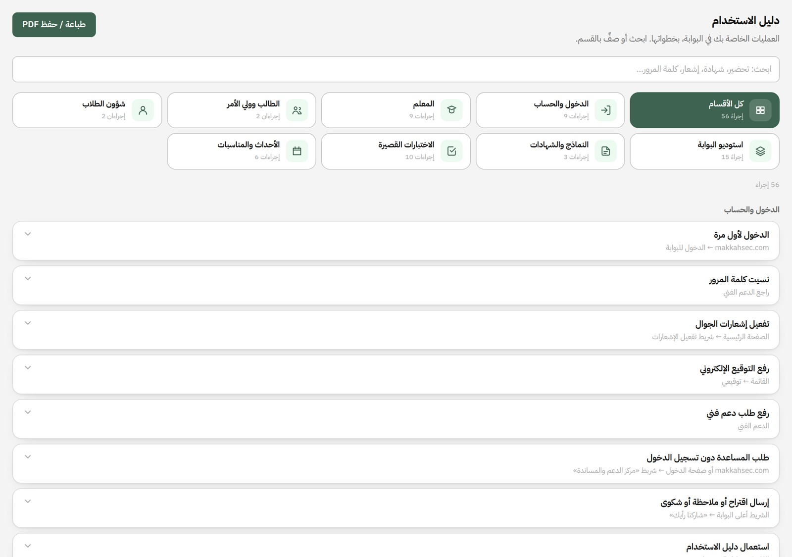
من التحضير إلى المتابعة، كل شيء من الجوال
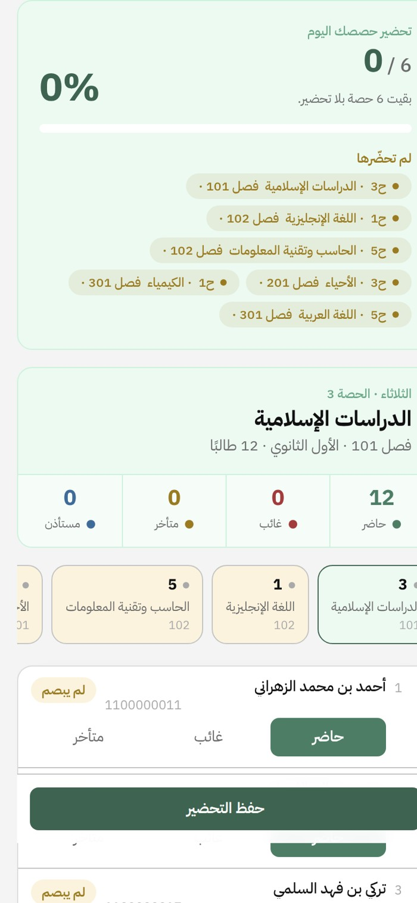
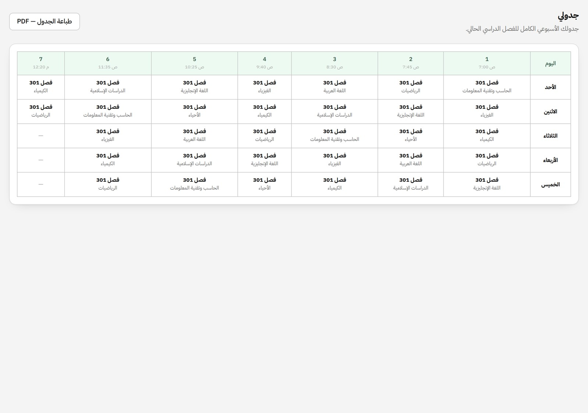
تربط البوابة بين بصمة الطالب صباحًا وتحضير المعلم في كل حصة، فتعتمد الغياب الرسمي آليًا، وتنبّه الإدارة إلى كل حالة تحتاج متابعة.
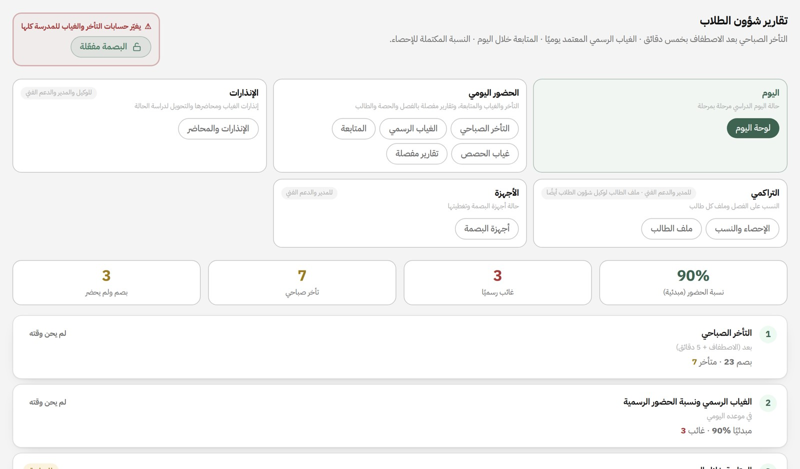
بدقائقه وتكراره، وتقرير لفترة محددة، ومتوسط اليوم الواحد في التقارير الشهرية.
تصدر بمراحلها، وتُحفظ في ملف الطالب الشامل المطبوع.
بلاغ المعلم، فطي القيد أو رد البلاغ عند الوكيل، مع بطاقة مطبوعة بالتوقيعين. وصل 26 بلاغًا.
صارت إحالة الطالب سلسلة من ست حلقات لكل حلقة صاحبها، ولا تُفتح حلقة قبل اكتمال التي قبلها. وأُغلق 44 من 49 إحالة بإقرار ولي الأمر.
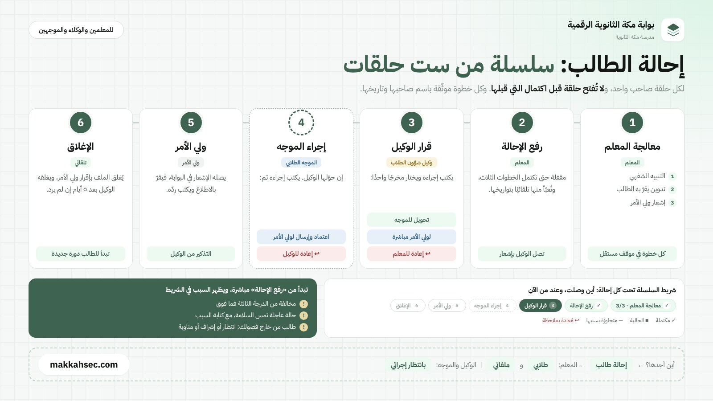
قائمة آلية لكل موجه بطلاب صفه الذين يحتاجون تدخلًا: الغياب بمراحل الإنذار (5، 10، 15، 20)، والتأخر ثلاث مرات فأكثر، ومتوسط أقل من 60% في مادتين فأكثر، والإحالات.
سجل سري لكل حالة وجلساتها، وإغلاقها بنتيجتها وطباعتها. يرى كل موجه طلاب صفه وحده، ويرى الوكيل والمدير الصفوف كلها.
يحدد كل معلم مستوى الطالب في مادته، ويكتب الموجه والوكيل رأيهما، وتصل نسخة لولي الأمر.
برامج الصف بموعدها تُنفَّذ أحداثًا في البوابة، وطلبات مقابلة من الطالب أو ولي أمره، وتقرير شهري بغلاف ورسوم.
الأسرة ترى ما يحدث في يوم ابنها، وتشارك في قراراته
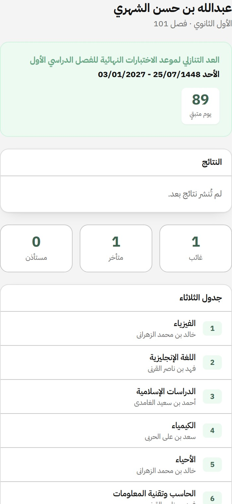
ينشئ المعلم اختباره مرة واحدة، ثم يختار طريقته: ورقي يُصحَّح آليًا، أو إلكتروني يؤديه الطالب من حسابه. وأنشأ المعلمون 58 اختبارًا رُصدت فيها 773 ورقة، بمعدل 35 ورقة في اليوم.
بطاقة إجابة باسم الطالب ورمز يقرؤه الماسح، وتصحيح جماعي: تُصوَّر بطاقات الفصل دفعة واحدة، ويُعرف صاحب كل بطاقة من رمزهجديد
صور في الأسئلة وسؤال استماع، وعلامة مائية باسم الطالب، ومنع النسخ والطباعة، وترتيب خيارات مختلف لكل طالبجديد
مستويات الأداء لكل سؤال وفصل، وتنبيه على مفتاح إجابة يُرجَّح خطؤه، وتقرير مطبوع بتوقيع المعلم.
كل مرحلة منجزة تصل شاهدًا آليًا إلى «شواهد الأداء الوظيفي». ومن بقي دون 60% بعد التحقق تلزمه خطة ثانية بدعم أعلى، وما بقي بعدها يصل المدير.
كشف من الجدول الدراسي يطابق كشف نور، ونسبة الرصد لكل مادة وفترة، ولون المهلة منذ موعد الاختبار، لوكيل الشؤون التعليمية والمدير.
يجمع درجات الاختبارات القصيرة في كشف واحد للمعلم، ويُصدَّر إلى Excel. ويُرصد فيه نحو 305 خانات في اليوم.
ترفع الإدارة النتائج فتظهر لكل طالب وولي أمره، وموعد الاختبارات النهائية ظاهر في الصفحة العامة.
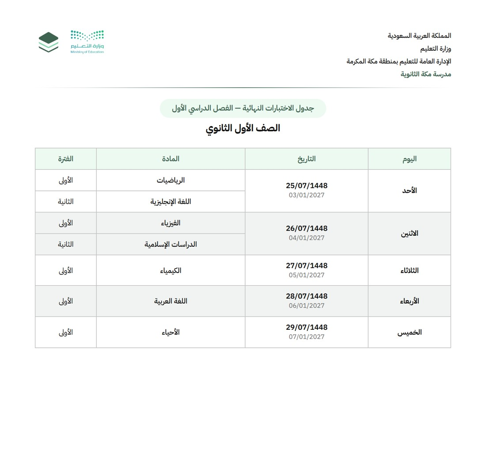
كل حدث أو مناسبة يمر بمراحل واضحة، وينتهي بتقرير معتمد وشهادات للمشاركين، فيصبح ملفًا جاهزًا لشواهد النشاط.
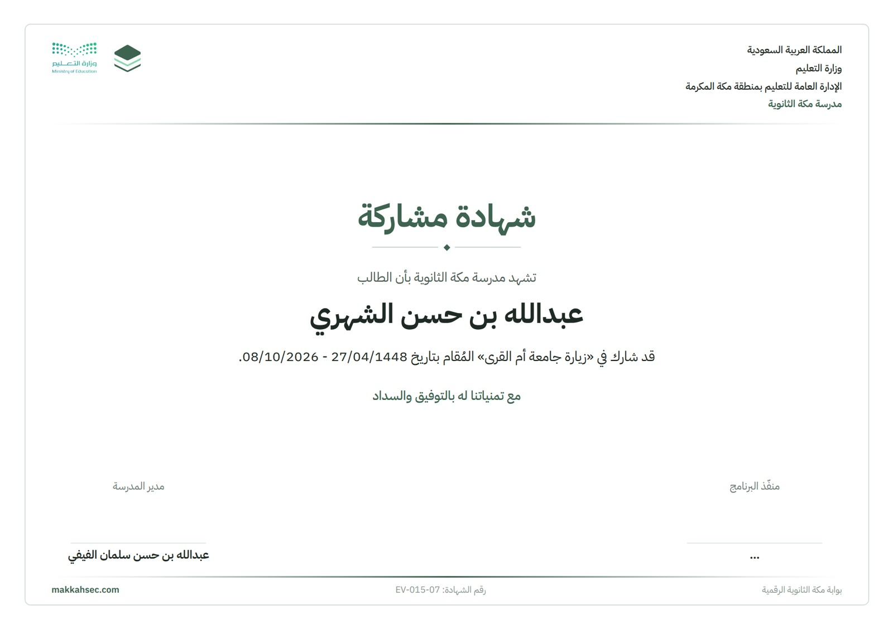
تصدر وتُعتمد إلكترونيًا، وتُرسل للمستفيد ليطّلع ويقرّ ويوقّع. صدر منها 193 نموذجًا، وأرشيفها منظّم للمتابعة.
توقيع إلكتروني لكل موظف، وختم المدرسة وتوقيع المدير، يُضافان آليًا للنماذج المعتمدة.
77 طالبًا مشاركًا، و57 موافقة إلكترونية من أولياء الأمور، و54 شهادة مشاركة.
ثمانية نماذج لسجل التطوير المهني بهوية البوابة، تُعبَّأ بالبطاقات وتُوقَّع وتُعتمد، ثم تُضاف إلى «شواهد الأداء الوظيفي» للمعلم دون رفع يدوي.
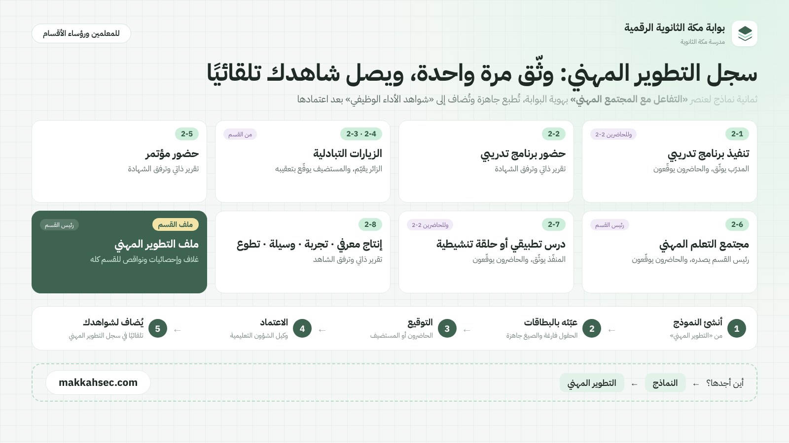
تقرير الجلسة بمراحله يصدره رئيس القسم ويوقّعه الحاضرون، وملف تطوير مهني لكل قسم بغلاف وإحصاءات ونواقص.
يصدرها الزائر لزميل من قسمه، ويوقّعها المستضيف بتعقيبه، ويعتمدها وكيل الشؤون التعليمية.
شواهد لكل بند يرفعها المعلم، وشواهد آلية من عمله في البوابة، وتقييم المدير بمرحلتيه، ودورات الاختبار غير المكتملة لكل معلم.
لكل توصية من زيارة دعم المعلم أو تقييم الأداء: خطة يكتبها المعلم، فمتابعة بموعد، فأثر يُقاس آليًا من الدرجة التالية، مع لوحة للمدير.
تقرير تفاعلي عن أعمال المعلم، يُبنى من بيانات البوابة لحظة فتحه
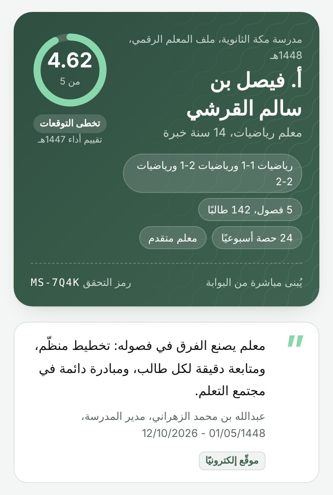
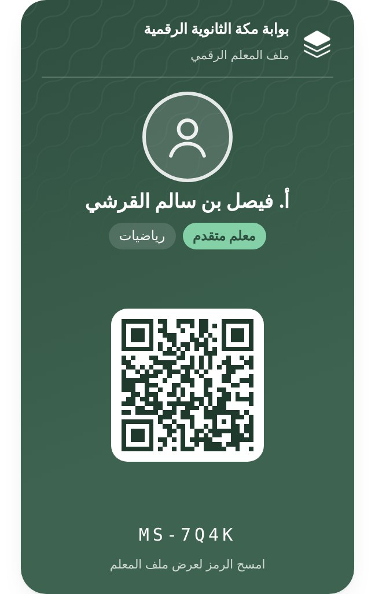
كل ما يصدر عن المدرسة بمظهر واحد
يختار المستخدم القالب، ويملأ بياناته، فيخرج التصميم جاهزًا للطباعة بمقاسه الحقيقي أو صورة للنشر. التصميم ثابت بهوية المدرسة، فتتوحد مطبوعات كل الأقسام.
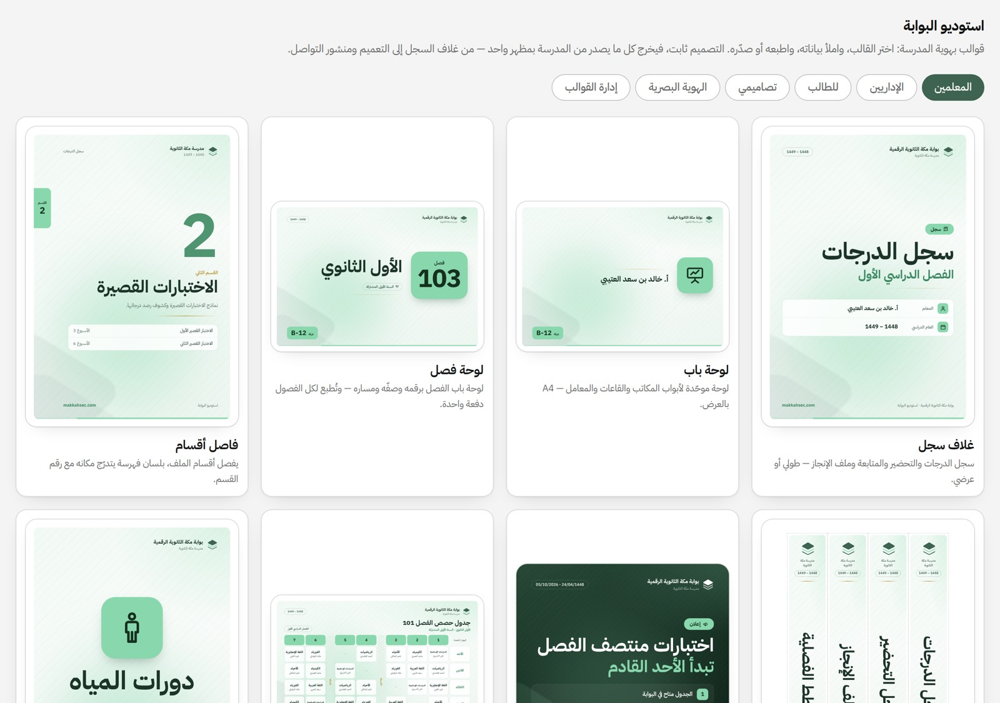
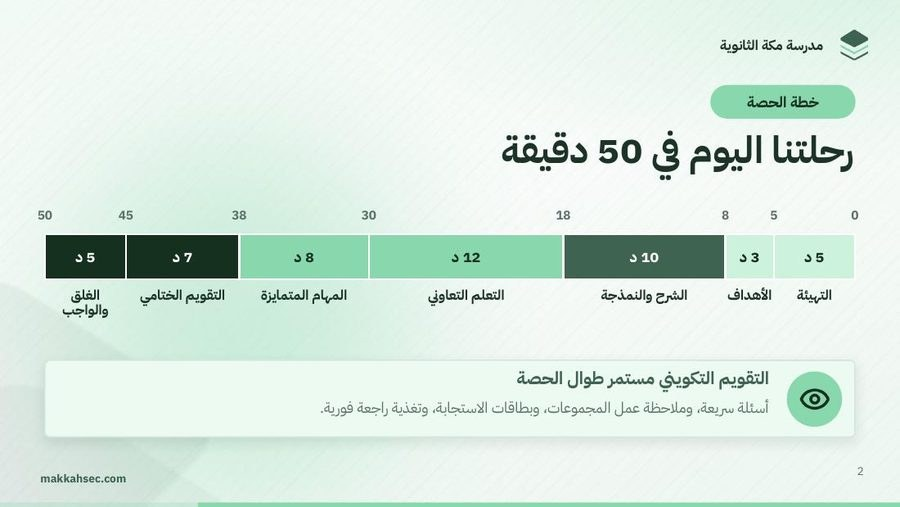
سبعة تقارير بغلاف ورسوم بيانية على طقم واحد بنسختين ملوّنة ورسمية: التقرير الشهري للمدرسة، والتقرير الشهري لشؤون الطلاب، والتقرير الشهري للموجه، وتقرير الأحداث، وتحليل نتائج الاختبارات، وشواهد الأداء الوظيفي، وملف التطوير المهني للقسم. تُطبع من الحاسب أو تُحفظ PDF من الجوال.
للبوابة صفحة عامة تعرّف بالمدرسة وأخبارها وتقويمها، وقنوات داخلية تصل كل فئة بما يخصها. يُرسل عبرها نحو 1,415 إشعارًا في اليوم الدراسي، يصل منها نحو 4,656 إلى الحسابات.
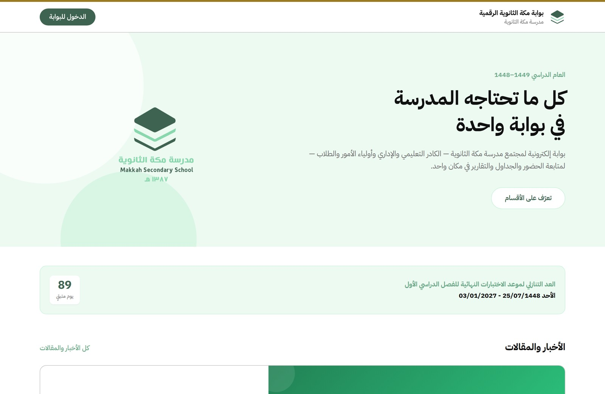
تُرسل لفئة أو فصل أو فرد، وتمر بمراجعة قبل وصولها عند الحاجة.
تُنشر بصورها، وتُشارك في وسائل التواصل.
المناسبات والإجازات الرسمية، وتتوقف الجداول تلقائيًا في الإجازة.
صندوق واحد في الرئيسية يجمع لكل مستخدم ما ينتظره: نموذج يحتاج توقيعه، أو إحالة وصلت حلقته، أو اختبار إلكتروني نُشر، أو موعد متابعة في خطة تطوير، أو ملاحظة حلّ موعدها، أو إقرار بالميثاق لم يُنجز.
وفق ملحق (أ) من الدليل الإجرائي للتقويم المدرسي الخارجي لمدارس التعليم العام (الإصدار الثالث 1448 - 2026) الصادر عن هيئة تقويم التعليم والتدريب. نعرض المؤشرات التي تقدّم لها البوابة خدمة وشاهدًا مباشرًا.
| الرمز | المؤشر كما في الدليل | خدمة البوابة | الشاهد المستخرج |
|---|---|---|---|
| الإدارة المدرسية · معيار التخطيط | |||
| 1-1-1-2 | تتابع المدرسة تنفيذ خطتها التشغيلية وتطورها بما يضمن تحقيق أهدافها | التقويم الدراسي، والأحداث بمراحل اعتمادها، ولوحة اليوم، والتقرير الشهري للمدرسة | تقارير الأحداث المعتمدة، والتقويم المنشور، والتقرير الشهري المصمّم |
| الإدارة المدرسية · معيار قيادة العملية التعليمية | |||
| 1-2-1-1 | تعزز المدرسة القيم الإسلامية والهوية الوطنية | المناسبات الوطنية والدينية بمشاركيها وشهاداتها | تقرير الحدث بالصور، وشهادات المشاركة |
| 1-2-1-2 | تطبق المدرسة قيم مهنة التعليم وأخلاقياتها، وتتابع الالتزام بها | ميثاق أخلاقيات المهنة: اطلاع صفحةً صفحة وإقرار إلكتروني (39 إقرارًا) | تقرير من أقرّ ومن لم يقرّ بتوقيعاتهم |
| 1-2-1-3 | تطبق المدرسة إجراءات محددة لدعم الانضباط المدرسي، وتتابع الالتزام بها | البصمة، والغياب الرسمي المعتمد آليًا، والتأخر، والإنذارات، وبلاغات الانقطاع | تقارير الغياب والتأخر، ومحاضر الإنذارات بمراحلها، وبطاقات الانقطاع |
| 1-2-1-4 | تنفذ المدرسة برامج وأنشطة تربوية داعمة للسلوك الإيجابي لدى المتعلمين، ومنهم ذوو الإعاقة والموهوبون، وتتابعها | سلسلة الإحالة الست، والإنذار المبكر، وحالات التوجيه وجلساتها، وشهادات الشكر | سجل الإحالات بحلقاتها، وسجل الحالات، والتقرير الشهري للموجه |
| 1-2-1-5 | تنفذ المدرسة برامج وأنشطة إثرائية؛ لتطوير مواهب المتعلمين، وتهيئهم للمستقبل، وتتابعها | أدوار برامج الموهوبين وجلوب وصوت الطالب ومكة سبورت، والأحداث، والخطط الإثرائية | كشوف المشاركين، وتقارير الأحداث، والشهادات |
| الإدارة المدرسية · معيار المجتمع المدرسي | |||
| 1-3-1-1 | تعزز المدرسة بناء العلاقات الإيجابية والتعاون في المجتمع المدرسي | مركز الدعم، و«رأيك يصنع الفرق»، والأخبار، ومجتمعات التعلم وتبادل الزيارات | تقرير الدعم والملاحظات، وتقارير الجلسات، واستمارات الزيارات |
| 1-3-1-2 | تعزز المدرسة مشاركة الأسرة في تعلم أبنائهم، والتحضير لمستقبلهم | حسابات أولياء الأمور، والإشعارات، والنتائج، والموافقات، وطلبات المقابلة، واستمارة المستوى | سجل الإشعارات، وموافقات أولياء الأمور، وردودهم على الإحالات |
| الإدارة المدرسية · معيار التطوير المؤسسي | |||
| 1-4-1-5 | تدعم المدرسة التطوير المهني لمنسوبيها وفقًا لنتائج التقويم وتحليل احتياجاتهم | سجل التطوير المهني بثمانية نماذج، ومجتمعات التعلم، وتبادل الزيارات، وخطط التطوير من توصيات زيارة الدعم وتقييم الأداء | نماذج التطوير المعتمدة (27)، وملف التطوير المهني للقسم، وشواهد الأداء الوظيفي |
| 1-4-1-6 | تطبق المدرسة التقويم الذاتي المبني على المعايير المعتمدة من الهيئة بشكل مستمر | الإحصاء والنسب، والتقارير المصمّمة، وإحصائية الاستخدام، وخطط التطوير | تقارير مطبوعة وملفات Excel مؤرخة، ولوحة المدير لخطط التحسين |
| 1-4-1-7 | تنفذ المدرسة خطة التحسين بناء على نتائج التقويم المدرسي، وتتابعها | خطط التطوير: توصية، فخطة، فمتابعة بموعد، فأثر يُقاس آليًا | لوحة المدير: المفتوح والمتأخر والمغلق ونسبة التحسّن |
| الرمز | المؤشر كما في الدليل | خدمة البوابة | الشاهد المستخرج |
|---|---|---|---|
| الإدارة المدرسية · معيار حقوق المتعلم وحمايته | |||
| 1-5-1-1 | تلتزم المدرسة بالمحافظة على حقوق المتعلمين، وحمايتهم | حماية البيانات على مستوى السجل، وخصوصية الصور بموافقة ولي الأمر، والحالات السرية | سياسات الصلاحيات، وسجل الموافقات، وسجل العمليات |
| 1-5-1-2 | توفر المدرسة مناخًا آمنًا للتعلم والنمو نفسيًا واجتماعيًا | التوجيه الطلابي والإنذار المبكر، والإحالات، والموجه الصحي وملاحظات الطلاب، والاستئذان | سجل الإحالات وإقفالها، وسجل الحالات، وسجل الاستئذان |
| التعليم والتعلم · معيار بناء خبرات التعلم | |||
| 2-1-1-2 | تدعم المدرسة تنفيذ المناهج بما يحقق نواتج التعلم المستهدفة | الجداول، وتحضير الحصص، وحصص الانتظار، وتوزيع المنهج في ملف المعلم، ومتابعة رصد نور | نسب تحضير الحصص اليومية، وتقرير حصص الانتظار، وكشف متابعة الرصد |
| 2-1-1-4 | تفعّل المدرسة التقنية الرقمية؛ لدعم تعلم المتعلمين وتلبية احتياجاتهم | البوابة على الجوال، والاختبارات الإلكترونية بالصور والاستماع، وجدول الطالب | سجل الاختبارات الإلكترونية ونتائجها |
| التعليم والتعلم · معيار تقويم التعلم | |||
| 2-2-1-1 | تطبق المدرسة أساليب وأدوات تقويم متنوعة؛ للكشف عن مستويات أداء المتعلمين المختلفة | دورة الاختبار (تشخيصي وفترتان)، وتصحيح آلي وجماعي بالكاميرا، وإلكتروني | أوراق الاختبارات وبطاقات الإجابة، وكشوف الرصد |
| 2-2-1-2 | تطبق المدرسة أساليب وأدوات متنوعة؛ لتقويم نواتج التعلم المستهدفة في مناهج التعليم | الاختبار التشخيصي واختبارا الفترتين، ومتابعة رصد درجات الفترات في نور | كشوف الرصد، وكشف متابعة الرصد بنسبه لكل مادة وفترة |
| 2-2-1-3 | تحلل المدرسة نتائج التقويم، وتوظفها في تحسين عمليات التعليم والتعلم والتقويم | تحليل النتائج لكل سؤال وفصل، والخطط العلاجية والإثرائية، واختبار التحقق | تقرير تحليل النتائج بتوقيع المعلم، وقياس الأثر قبل الخطة وبعدها |
| 2-2-1-4 | تقدم المدرسة التغذية الراجعة للمتعلمين وأولياء أمورهم، وتتابع تقدمهم بشكل مستمر | نتائج الاختبارات القصيرة في حساب الطالب وولي أمره، ونشر النتائج | النتائج المنشورة، والإشعارات المرسلة |
| نواتج التعلم · معيار التطور الشخصي والصحي والاجتماعي | |||
| 3-2-1-1 | يظهر المتعلمون الاعتزاز بالقيم والهوية الوطنية | المناسبات الوطنية ومشاركة الطلاب فيها | تقارير الأحداث، وشهادات المشاركة |
| 3-2-1-4 | يشارك المتعلمون في الأنشطة المجتمعية والأعمال التطوعية | الأحداث بمشاركيها، وموافقات أولياء الأمور، والشهادات | كشوف المشاركين والحضور، والشهادات |
| 3-2-1-5 | يلتزم المتعلمون بقواعد السلوك والانضباط المدرسي | نسب الحضور، والتأخر، والإنذارات، وملف الطالب الشامل | الإحصاء والنسب، وملف الطالب، وتقارير الفصول |
| البيئة المدرسية · معيار الأمن والسلامة | |||
| 4-2-1-1 | تتوافر في مبنى المدرسة ومرافقها جميع متطلبات الأمن والسلامة | مسؤول الأمن والسلامة، والمناوبة والإشراف، ومتابعة من بصم ولم يحضر | جداول المناوبة والإشراف وتقريرها، وتقرير الطالب المفقود خلال اليوم |
تخدم البوابة هدفَي التقويم: «دعم القيادات وصناع القرار في اتخاذ القرارات بيانات موثوقة» و«تعزيز مشاركة المعلمين وأولياء الأمور في عمليات تقويم الأداء المدرسي».
كل شاهد مؤرخ بالصيغة الموحدة (الهجري - الميلادي) ومنسوب لمن أصدره، ويُطبع بترويسة وزارة التعليم والمدرسة أو يُصدَّر إلى Excel.
صُممت البوابة على مبدأ «أقل صلاحية لازمة»: يرى كل مستخدم ما يخصه فقط، ويُسجَّل كل إجراء حساس باسم صاحبه ووقته.
292 سياسة في قاعدة البيانات تحدد من يقرأ كل سجل ومن يعدّله، فلا يرى المعلم إلا طلابه، ولا يرى ولي الأمر إلا أبناءه.
الدخول برقم الهوية، وتغيير كلمة المرور إجباري في أول دخول، وخروج تلقائي لحسابات الإدارة عند الخمول.
يُسجّل من أنشأ وعدّل واعتمد، مع سجل للدخول والخروج يراجعه الدعم الفني.
نسخة يومية تُحفظ 7 أيام، ونسخة أسبوعية مشفّرة خارج الخادم تُحفظ 90 يومًا، تشمل البيانات والملفات.
كل تحديث يُجرَّب أولًا على نسخة مستقلة ببيانات وهمية قبل وصوله للمستخدمين.
يُوقف البوابة مؤقتًا عن الجميع عدا الدعم الفني عند أي عمل حساس.
النماذج الرسمية والأحداث والإشعارات العامة تمر بمراجعة واعتماد قبل صدورها.
لا يظهر طالب في صورة منشورة إلا بموافقة ولي أمره المسجلة في البوابة.
التواقيع والأختام وشواهد الملف الرقمي في مخازن خاصة، تُفتح برابط مؤقت لمن يملك حق رؤيتها فقط.
جوالات المعلمين محجوبة عن غير الإداريين، وحالات التوجيه سرية لموجه الصف ومن فوقه.
طلب دعم من داخل البوابة، أو دون تسجيل دخول لمن تعثّر دخوله، باسمه ورقم جواله. ولكل طلب تذكرة ومتابعة وتقرير. وصل 20 طلبًا وملاحظة.
قناة دائمة للاقتراحات والملاحظات والشكاوى، تصل الدعم الفني ويُرد عليها.
132 إجراءً موثقًا بالخطوات في دليل الاستخدام، وأدلة PDF مصوّرة لكل فئة وللخدمات الجديدة، ورسالة ترحيب عند الدخول.
إحصائية استخدام لكل خدمة ونموذج وقالب، ومؤشرات حالة الموقع وقاعدة البيانات للدعم الفني، ولقطة يومية لها.
| الخدمة | ما تفعله | متى |
|---|---|---|
| استقبال البصمة | تستقبل سجلات أجهزة البصمة وتربطها بالطلاب، وتضبط ساعة الأجهزة من الخادم | لحظيًا |
| تذكير التحضير | تنبّه المعلم الذي لم يحضّر حصته الجارية | كل 5 دقائق خلال الدوام |
| الاعتماد الآلي | تعتمد الغياب الرسمي ونسبة الحضور وتُشعر الإدارة | بعد الحصة الثانية ونهاية اليوم |
| الملخص اليومي | إشعار واحد للإدارة بالحصص التي لم تُحضّر ومعلميها | 2:20 مساءً |
| إرسال الإشعارات | توصيل الإشعارات إلى الجوالات | عند كل إرسال |
| مراقبة الموقع | لقطات دورية لحالة الموقع ومؤشراته، ولقطة يومية تُحفظ | دوريًا، و11:55 مساءً |
| روابط التواقيع والأختامجديد | روابط مؤقتة لتواقيع النماذج والإحالات وتوقيع الوكيل على جداول الاختبارات | عند فتح المستند |
| شواهد الملف الرقميجديد | رابط مؤقت لخمس دقائق يعاين به الزائر شاهد المعلم دون دخول | عند فتح الشاهد |
الحضور والبصمة، والنماذج، والاختبارات ودوراتها، والأحداث، والاستوديو، والتواصل، والتوجيه الطلابي، والتطوير المهني، وتقييم الأداء، وملف المعلم الرقمي.
تحديثات منتظمة من مقترحات المستخدمين عبر «رأيك يصنع الفرق» ومركز الدعم، تُجرَّب أولًا على النسخة التجريبية.
مبادرات طلابية وأنشطة مرتبطة بحسابات الطلاب، وتعميم ملف المعلم الرقمي على كل المعلمين، وقياس دوري لرضا المستفيدين.